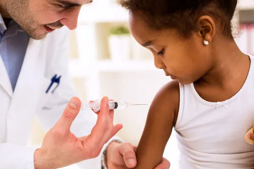

Ministério da Saúde inicia estudo sobre vacina contra a dengue em parceria com prefeitura do RJ e Fiocruz
o Ministério da Saúde inicia, nesta sexta-feira (16), um estudo para avaliar a efetividade da vacina na população adulta.
Por Ana Furtado, amvsnews19/02/2024


 Imagem de cientistas trabalhando com microscópio — Foto: Freepik
Imagem de cientistas trabalhando com microscópio — Foto: Freepik
Como parte do conjunto de ações estratégicas para o enfrentamento das arboviroses e do aumento de casos de dengue no Brasil, o Ministério da Saúde inicia, nesta sexta-feira (16), um estudo para avaliar a efetividade da vacina na população adulta. A iniciativa acontece em Guaratiba, zona oeste do Rio de Janeiro
A iniciativa acontece em Guaratiba, zona oeste do Rio de Janeiro. A pesquisa vai imunizar 20 mil pessoas voluntárias, entre 18 e 40 anos de idade, residentes da região e com cadastro ativo em uma das 10 unidades locais de Atenção Primária.
O objetivo é comparar a incidência de infecção sintomática de dengue em um grupo vacinado com a incidência entre não vacinados. Com isso, será possível medir a efetividade do imunizante na prevenção de casos sintomáticos de dengue por qualquer sorotipo. O estudo, realizado em parceria com a Fundação Oswaldo Cruz (Fiocruz) e com a Secretaria Municipal de Saúde do Rio de Janeiro, vai oferecer novas evidências científicas para subsidiar a tomada de decisão na vacinação dos demais públicos aprovados pela Anvisa, da faixa etária de 4 a 60 anos.
/i.s3.glbimg.com/v1/AUTH_da025474c0c44edd99332dddb09cabe8/internal_photos/bs/2023/C/6/NGSnXFT3AjqcSyGVwfCA/covid-ainda-vida-com-vacina.jpg) Vacina — Foto: O Globo
Vacina — Foto: O Globo
A proposta foi apresentada ao governo federal pela Secretaria de Saúde do município que, por sorteio, selecionou os meses de nascimento maio, agosto, outubro e novembro como critério de definição dos participantes.
Os moradores de Guaratiba, Barra de Guaratiba, Pedra de Guaratiba e Ilha de Guaratiba nascidos nos quatro meses sorteados estão aptos a participar da pesquisa. Não poderão participar as pessoas que estiverem gestantes ou amamentando, se tiverem contraído dengue nos últimos seis meses, se tiverem problemas de imunodepressão ou se receberam hemoderivados nos últimos três meses.
Os voluntários serão acompanhados mensalmente por meio eletrônico, para monitoramento ativo, ao longo dos próximos dois anos.
O Ministério da Saúde desenvolveu, ainda, uma estratégia de farmacovigilância ativa, cruzando dados de notificação de dengue dos sistemas de Informação de Agravos de Notificação (Sinan), de Informações Hospitalares (SIH) e de Informação sobre Mortalidade (SIM) com os dados individualizados de vacinação. A pasta conta com laboratórios de referência para identificar e sequenciar os sorotipos do vírus da dengue, como os do Instituto Evandro Chagas, da Fiocruz e do Instituto Adolfo Lutz.
O estudo para verificar a eficácia da vacina contra a dengue na população adulta começou nesta sexta-feira (16), em Barra de Guaratiba, zona oeste da cidade. A parceria da Secretaria Municipal de Saúde (SMS) do Rio de Janeiro com a Fundação Oswaldo Cruz (Fiocruz) e o Ministério da Saúde vai ajudar na decisão de futura incorporação nacional do imunizante para outras faixas etárias. A vacina aplicada é a Qdenga, fabricada pelo laboratório japonês Takeda.
Ler mais: Importância da vacinação  Foto - Brasil Escola
Vacinas são substâncias que possuem como função estimular nosso corpo a produzir respostas imunológicas a fim de nos proteger contra determinada doença. Elas são produzidas a partir do próprio agente causador da doença, que é colocado em nosso corpo de forma enfraquecida ou inativada.
Veja mais sobre "Importância da vacinação"